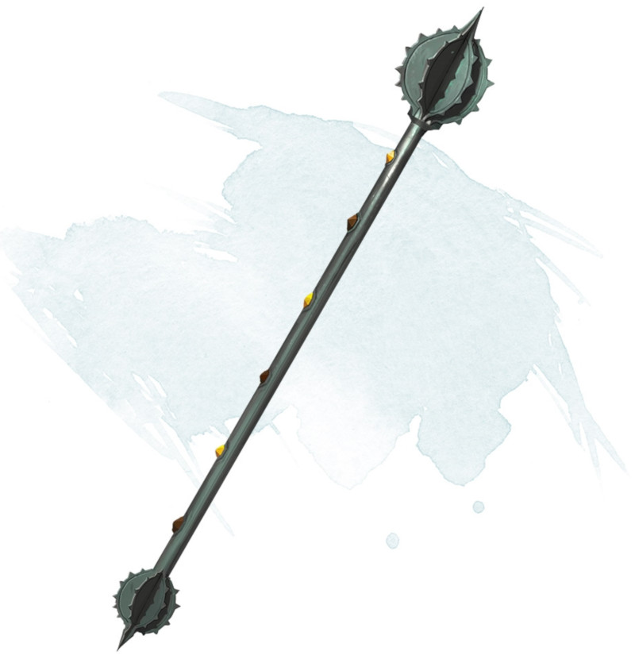

Rod of Lordly Might
Rod, legendary (requires attunement)
This rod has a flanged head, and it functions as a magic mace that grants a +3 bonus to attack and damage rolls made with it. The rod has properties associated with six different buttons that are set in a row along the haft. It has three other properties as well, detailed below.
Six Buttons. You can press one of the rod's six buttons as a bonus action. A button's effect lasts until you push a different button or until you push the same button again, which causes the rod to revert to its normal form.
If you press button 1, the rod becomes a flame tongue, as a fiery blade sprouts from the end opposite the rod's flanged head. (You choose the type of sword.)
If you press button 2, the rod's flanged head folds down and two crescent-shaped blades spring out, transforming the rod into a magic battleaxe that grants a +3 bonus to attack and damage rolls made with it.
If you press button 3, the rod's flanged head folds down, a spear point springs from the rod's tip, and the rod's handle lengthens into a 6-foot haft, transforming the rod into a magic spear that grants a +3 bonus to attack and damage rolls made with it.
If you press button 4, the rod transforms into a climbing pole up to 50 feet long, as you specify. In surfaces as hard as granite, a spike at the bottom and three hooks at the top anchor the pole. Horizontal bars 3 inches long fold out from the sides, 1 foot apart, forming a ladder. The pole can bear up to 4,000 pounds. More weight or lack of solid anchoring causes the rod to revert to its normal form.
If you press button 5, the rod transforms into a handheld battering ram and grants its user a +10 bonus to Strength checks made to break through doors, barricades, and other barriers.
If you press button 6, the rod assumes or remains in its normal form and indicates magnetic north. (Nothing happens if this function of the rod is used in a location that has no magnetic north.) The rod also gives you knowledge of your approximate depth beneath the ground or your height above it.
Drain Life. When you hit a creature with a melee attack using the rod, you can force the target to make a DC 17 Constitution saving throw. On a failure, the target takes an extra 4d6 necrotic damage, and you regain a number of hit points equal to half that necrotic damage. This property can't be used again until the next dawn.
Paralyze. When you hit a creature with a melee attack using the rod, you can force the target to make a DC 17 Strength saving throw. On a failure, the target is paralyzed for 1 minute. The target can repeat the saving throw at the end of each of its turns, ending the effect on a success. This property can't be used again until the next dawn.
Terrify. While holding the rod, you can use an action to force each creature you can see within 30 feet of you to make a DC 17 Wisdom saving throw. On a failure, a target is frightened of you for 1 minute. A frightened target can repeat the saving throw at the end of each of its turns, ending the effect on itself on a success. This property can't be used again until the next dawn.
Six Buttons. You can press one of the rod's six buttons as a bonus action. A button's effect lasts until you push a different button or until you push the same button again, which causes the rod to revert to its normal form.
If you press button 1, the rod becomes a flame tongue, as a fiery blade sprouts from the end opposite the rod's flanged head. (You choose the type of sword.)
If you press button 2, the rod's flanged head folds down and two crescent-shaped blades spring out, transforming the rod into a magic battleaxe that grants a +3 bonus to attack and damage rolls made with it.
If you press button 3, the rod's flanged head folds down, a spear point springs from the rod's tip, and the rod's handle lengthens into a 6-foot haft, transforming the rod into a magic spear that grants a +3 bonus to attack and damage rolls made with it.
If you press button 4, the rod transforms into a climbing pole up to 50 feet long, as you specify. In surfaces as hard as granite, a spike at the bottom and three hooks at the top anchor the pole. Horizontal bars 3 inches long fold out from the sides, 1 foot apart, forming a ladder. The pole can bear up to 4,000 pounds. More weight or lack of solid anchoring causes the rod to revert to its normal form.
If you press button 5, the rod transforms into a handheld battering ram and grants its user a +10 bonus to Strength checks made to break through doors, barricades, and other barriers.
If you press button 6, the rod assumes or remains in its normal form and indicates magnetic north. (Nothing happens if this function of the rod is used in a location that has no magnetic north.) The rod also gives you knowledge of your approximate depth beneath the ground or your height above it.
Drain Life. When you hit a creature with a melee attack using the rod, you can force the target to make a DC 17 Constitution saving throw. On a failure, the target takes an extra 4d6 necrotic damage, and you regain a number of hit points equal to half that necrotic damage. This property can't be used again until the next dawn.
Paralyze. When you hit a creature with a melee attack using the rod, you can force the target to make a DC 17 Strength saving throw. On a failure, the target is paralyzed for 1 minute. The target can repeat the saving throw at the end of each of its turns, ending the effect on a success. This property can't be used again until the next dawn.
Terrify. While holding the rod, you can use an action to force each creature you can see within 30 feet of you to make a DC 17 Wisdom saving throw. On a failure, a target is frightened of you for 1 minute. A frightened target can repeat the saving throw at the end of each of its turns, ending the effect on itself on a success. This property can't be used again until the next dawn.
Dungeon Master´s Guide (SRD)
